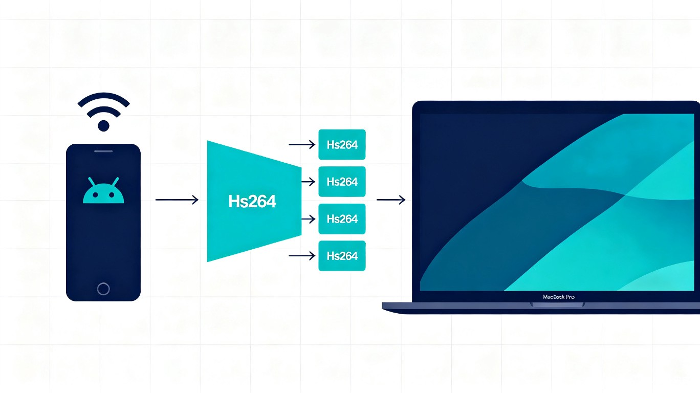

1. 概要
开发一个 Mac 原生应用，实现 Android 手机屏幕通过 USB 线实时共享到 Mac。核心原则：手机端零安装，通过 ADB 临时推送 scrcpy-server.jar 完成投屏，会话结束后不留痕迹。
2. 技术选型
| 决策项 | 选择 | 理由 |
|---|---|---|
| 投屏协议 | scrcpy (raw_stream 模式) | 延迟最低 (30-70ms USB)、成熟稳定、无需手机端 App |
| 视频解码 | VideoToolbox (硬件加速) | 系统内置、零第三方依赖、性能极佳 |
| 渲染方案 | Metal + SwiftUI | 原生性能最佳 |
| ADB 依赖 | 内嵌 adb 到 App Bundle | 用户无需手动安装任何工具 |
| 连接方式 | USB (MVP) / 无线 (v2) | MVP 聚焦 USB 稳定性，无线后续迭代 |
| 分发方式 | Developer ID 签名 | 内嵌 adb 不符合 App Store 沙盒政策 |
3. 架构设计
3.1 数据流
flowchart LR
A[Android 屏幕
MediaCodec H.264] -->|USB| B[scrcpy-server.jar
临时推送执行]
B -->|adb forward
TCP Socket| C[ScrcpyClient
协议解析]
C -->|NAL 单元| D[VideoDecoder
VideoToolbox]
D -->|CVPixelBuffer| E[MirrorView
Metal 渲染]
3.2 scrcpy raw_stream 协议
# 连接建立
1. adb push scrcpy-server.jar /data/local/tmp/
2. adb forward tcp:PORT localabstract:scrcpy
3. adb shell CLASSPATH=/data/local/tmp/scrcpy-server.jar \
app_process / com.genymobile.scrcpy.Server --raw-stream
# 协议格式
元数据 (12字节): codec_id(u32) + width(u32) + height(u32)
帧头 (12字节): flags(1B) + PTS(7B) + payload_size(u32)
payload: H.264 Annex B 编码数据3.3 模块架构
flowchart TB
subgraph UI["SwiftUI 视图层"]
CV[ContentView
状态路由]
DL[DeviceListView
设备列表]
MV[MirrorView
Metal 投屏]
end
subgraph S["服务层"]
DM[DeviceManager
生命周期]
SC[ScrcpyClient
协议解析]
VD[VideoDecoder
H.264 解码]
AB[ADBService
进程管理]
end
subgraph U["工具层"]
NP[NALParser
NAL 解析]
end
CV --> DL
CV --> MV
DL --> DM
MV --> VD
DM --> AB
DM --> SC
SC --> VD
VD --> NP
4. 项目结构
5. 实施步骤 MVP
Step 1: 项目初始化 + 资源准备
创建 Xcode 项目 (macOS App, Swift + SwiftUI)，最低 macOS 13.0，关闭 App Sandbox。下载 scrcpy-server.jar (v2.7) 和 adb 二进制，放入 Resources 并配置 Build Phases。
Step 2: ADB 服务模块
实现 ADBService.swift：通过 Foundation.Process 调用内嵌 adb。核心方法：listDevices() 设备检测、pushServer() 推送 jar、forwardPort() 端口转发、startServer() 启动服务端。所有操作 async/await。
Step 3: scrcpy 协议客户端
实现 ScrcpyClient.swift：NWConnection TCP 连接本地转发端口。解析 12 字节元数据 + 帧头，区分配置包 (SPS/PPS) 和数据帧，处理 TCP 粘包（按 payload size 精确读取）。
Step 4: H.264 解码器 + NAL 解析
实现 NALParser.swift（Annex B 起始码分割）和 VideoDecoder.swift（VideoToolbox 硬件解码）。从配置包提取 SPS/PPS 创建解码会话，处理屏幕旋转时的解码器重启。
Step 5: Metal 渲染视图
实现 MirrorView.swift：NSViewRepresentable + CAMetalLayer。CVPixelBuffer → Metal 纹理 → 全屏四边形渲染。支持全屏/窗口切换，保持宽高比。
Step 6: 设备管理器 + UI 集成
实现 DeviceManager.swift（轮询 adb devices，协调启动顺序，@Published 状态）。完成 ContentView（状态路由）和 DeviceListView（设备列表 + 点击投屏）。状态驱动 UI。
Step 7: 集成测试
USB 设备检测 → 投屏显示 → 全屏切换 → 断线恢复 → 屏幕旋转自适应。目标延迟 < 100ms (USB)。
6. 范围界定
MVP 本期实现
USB 连接设备自动检测
H.264 视频流实时解码渲染
全屏 / 窗口模式切换
设备断开状态管理
屏幕旋转自适应
v2 后续迭代
Android 11+ 无线调试配对连接
反向控制手机（触摸/键盘）
音频传输
录屏功能
分辨率 / 码率调节
7. 用户前置条件
8. 风险与对策
| 风险 | 对策 |
|---|---|
| scrcpy 协议版本变更 | 锁定 server.jar v2.7，升级时验证兼容性 |
| H.264 NAL 解析边界 | 严格实现 Annex B 起始码检测 + SPS/PPS 分片重组 |
| adb 二进制兼容性 | 内嵌通用 macOS adb，首次启动 chmod +x |
| 设备授权弹窗 | App 内引导提示用户在手机上点击"允许" |
9. 验证标准
| 验证项 | 预期结果 | 级别 |
|---|---|---|
| USB 设备检测 | 连接后正确显示设备列表 | P0 |
| 投屏显示 | 实时画面，延迟 < 100ms | P0 |
| 全屏模式 | 切换全屏，比例正确 | P1 |
| 断线恢复 | 拔线后正确提示断开 | P1 |
| 屏幕旋转 | 横竖屏切换后自适应 | P1 |
10. 关键假设
- scrcpy-server.jar 锁定 v2.7，避免协议变更风险
- MVP 仅 H.264，不处理 H.265/AV1
- 使用 raw_stream 模式，直接获取裸 H.264 流
- adb 内嵌 App Bundle，用户零配置
- 最低 macOS 13，通过 Developer ID 分发